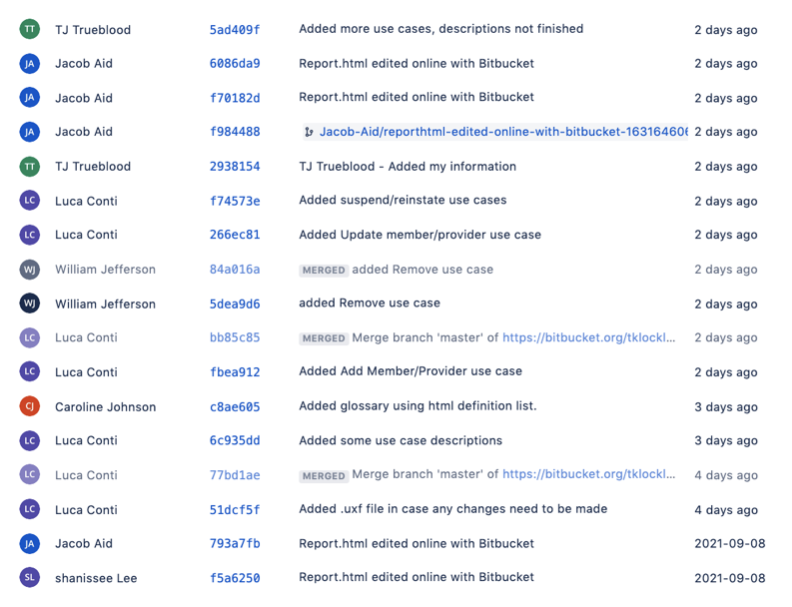
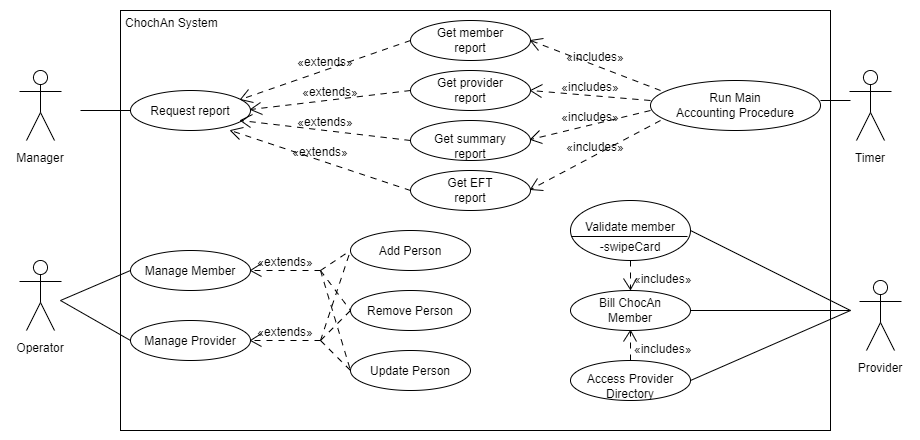

| Name |
CWID Number |
Crimson Email |
Hours Committed |
| Luca Conti |
11856871 |
lconti1@crimson.ua.edu |
2 |
| William Jefferson |
11930076 |
wtjefferson@crimson.ua.edu |
2 |
| Jacob Aid |
11950741 |
jiaid@crimson.ua.edu |
2 |
| Shanissee Lee |
12100396 |
srlee2@crimson.ua.edu |
1 |
| Caroline Johnson |
12100578 |
chjohnson9@crimson.ua.edu |
2 |
| TJ Trueblood |
12075419 |
tbtrueblood@crimson.ua.edu |
2 |
| Name |
Task Performed |
Percent Contributed |
| Luca Conti |
Layed out HTML format, gave some Use Case descriptions |
18% |
| William Jefferson |
Created use case diagram |
18% |
| Jacob Aid |
Wrote Paragraph |
18% |
| Shanissee Lee |
Reviewing HTML format, error checking document |
10% |
| Caroline Johnson |
Created Glossary and fixed format/consistency issues |
18% |
| TJ Trueblood |
Described each use case in this HTML file |
18% |

Paragraph
Our organization has been given the task of creating the ChocAn data processing software.
This software will be used by ChocAn's provider terminals in order to deliver the ability for members to receive health care services from ChocAn, pay for services and comment on the service provided to them.
This software will also allow ChocAn providers to look up records of members' past bills.
This software will keep weekly records of how much the ChocAn provider using the terminal is to bill ChocAn for their services.
It will also email reports to the providers containing the services they provided to ChocAn members.
Members will also receive emails containing a report of the services they have received.
Members will interact with the provider terminals using a card and a keyboard.
Members will scan their card and our software must verify that their membership is valid.
An error message will be given if either the card was invalid or if the membership has been suspended.
Our software will then allow the member to look up services using a service code.
If the servie code is invalid an error message will display.
Our software will also allow the member to fill out a form that will be used for billing said member for the service they selected.
The software will also allow providers to add or remove members as well as update existing member's data.
The actual billing of the members will be handled by ACME Accounting Services. See the glossary for more details.
Other objectives outside of our scope include the designing of the actual ChocAn terminal that will be running our software, the communication software used between ChocAn and providers, and the implementation of the EFT component.
Glossary
- ACME Accounting Services
- A third party organization that deals with processing payments of membership fees.
- Card
- Each member has a card that contains their name, nine-digit member number, and encoded information.
- Card Verification
- The member card is verified through the card reader with one of three results: Validated, Invalid number, or Member suspended.
- ChocAn/Chocoholics Anonymous
- An organization that provides services to people addicted to chocolate.
- ChocAn Computer Terminal
- A device that works similarly to a credit card device in a shop.
- ChocAn Data Center
- The data center's computer checks the member's card to see if the member number is valid, invalid, or if the member is suspended.
- Date of Service
- The date a service was provided. It is needed due to potential difficulties that may prevent the provider from billing ChocAn immediately.
- EFT
- Electronic Funds Transfer.
- EFT Report
- A report containing electronic funds transfer data. This includes the provider name, provider number, and the amount to be transferred.
- Interactive Mode
- Mode of operation allowing for the addition, removal, and update of members/providers and their records.
- Main Accounting Procedure
- Procedure run at midnight on Fridays at the ChocAn Data Center. It reads the week's file of provided services and prints reports.
- Manager
- The manager is given the summary report. A manager can request to run any report at any time during the week.
- Member
- Members pay member fees to ChocAn each month. Each member has a card containing member data. Members can recieve consultations, treatments, and other services from providers.
- Member Data
- The data for a member includes their city, name, member number, state, street address, and zip code.
- Member Reinstatement
- Suspended members who pay overdue fees are reinstated.
- Member Report
- Report that contains member data as well as the date of service, provider name, and service name for each service provided in a certain week.
- Membership Fees
- Monthly fee that members pay to ChocAn.
- Operator
- Operators have the job of adding, removing, and updating members/member data.
- Overdue Fees
- Members with overdue fees are suspended.
- Provider
- Providers or Healthcare Professionals supply consultations, treatments, and other tasks to members.
- Provider Data
- The data for a provider includes their city, name, provider number, state, street address, and zip code.
- Provider Directory
- Alphabetically ordered list of service names, service codes, and fees.
- Provider Report
- Report sent to providers who have billed ChocAn during a certain week. It contains provider data as well as the date of each service, date and time data were received by the computer, member name and number, service code, number of consultations, fee to be paid, and total fee for the week.
- Service
- Includes consultations, treatments, and other tasks that providers supply to members.
- Service Data
- The data for a service includes its date, name, fees, and code. The code is six digits.
- Software Product
- The software product displays the service name when a code is provided and asks the provider to confirm that the displayed service is correct. If the code does not exist it prints an error message. The product writes a record to disk including the current date and time, date the service was provided, provider number, member number, service code, and any comments. It then looks up the service fee and displays it. The software product also includes a provider directory that may be requested.
- Summary Report
- The report that lists all providers to be paid for the week, as well as each provider's the number of consultations and total fee for the week.
- Timer
- The timer is responsible for running the main accounting procedure, which includes member, provider, summary, and EFT reports.
Case Diagram

Use Cases
- Request Report
- Context: Manager wishes to request a report from the ChocAn System
- Actors: Manager
- Main Success Scenario:
- Manager accesses Manager Terminal
- Manager selects to request a report
- Manager selects to request a summary report
- A report containing information for accounts payable is generate
- The system prints the report
- The system exits the request report menu
- Extensions:
- 3a. Manager requests an EFT report
- 3a.1 Manager selects to request an EFT report
- 3a.2 A report containing the electronic funds transfer is created
- 3a.3 Continue to step 5
- 3b. Manager requests an Provider report
- 3b.1 Manager selects to request an Provider report
- 3b.2 Manager selects which provider they wish to generate a report for
- 3b.3 A report containing the list of services provided by provider is generated
- 3b.4 Continue to step 5
- 3c. Manager requests an Member report
- 3c.1 Manager selects to request an Member report
- 3c.2 Manager selects member to generate a report for
- 3c.3 A report containing the list of services provided in order of date is generated
- 3c.4 Continue to step 5
- Run Main Accounting Procedure
- Context: System generates weekly list of reports
- Actors: Timer
- Main Success Scenario:
- Timer goes off on Friday at midnight to begin procedure
- ChocAn system reads files of services provided in the last week
- System generates all Member, Provider, Summary, and EFT reports from the last week
- System sends all members their respective reports
- System sends all providers their respective reports
- System sends Summary report to manager
- System prints total number of providers who provided services, the total
number of consultations, and the overall fee total are printed
- System exits main accounting procedure
- Manage Member
- Context: The operator wants to update, add, or remove a member
- Actors: Operator
- Main Success Scenario:
- Operator accesses the terminal
- They navigate to the edit menu
- Operator opts to add a member to the directory
- Operator enters new meber's information
- System adds new member to database
- Exit Condition:
- Member has been added
- Extensions:
- 3a. Operator opts to remove a member
- 3a.1 Operator opts to remove a member
- 3a.2 Operator enters name of member to remove
- 3a.3 System removes member from database
- Exit Contiton:
- Member has been removed
- 3a. Operator opts to update a member
- 3a.1 Operator opts to update a member
- 3a.2 Operator enters name of member to update
- 3a.3 Operator makes the chnages to the member's profile
- 3a.4 System updates member in database
- Exit Contiton:
- Member has been updated
Manage Provider
- Context: The operator wants to update, add, or remove a provider
- Actors: Operator
- Main Success Scenario:
- Operator accesses the terminal
- They navigate to the edit menu
- Operator opts to add a provider
- Operator enters the name of the provider to be added
- System adds provider to the database
- Exit Condition:
- Provider has been added
Extensions:
- 3a. Operator opts to remove a provider
- 3a.1 Operator opts to remove a provider
- 3a.2 Operator enters name of provider to remove
- 3a.3 System removes provider from database
- Exit Contiton:
- Provider has been removed
- 3a. Operator opts to update a provider
- 3a.1 Operator opts to update a provider
- 3a.2 Operator enters name of provider to update
- 3a.3 Operator makes the chnages to the provider's profile
- 3a.4 System updates provider in database
- Exit Contiton:
- Provider has been updated
Validate Member
- Context: Provider swipes the member's card to determine validity
- Actors: Provider
- Main Success Scenario:
- Provider recieves card from the member
- Provider swipes the card through the card reader on the terminal
- Terminal verifies the member number by searching for it in the member list
- Provider returns card to member
- Exit Condition:
- Terminal returns member is valid
- Extensions:
- 2a. Member is invalid
- 2a.1 Terminal displays "Member Invalid"
- 2a.2 Return to step 1
- 2b. Member is suspended
- 2b.1 Terminal displays "Member Suspended"
- 2b.2 Provider shows member the fees that are owed
- 2b.3 Member pays fees, return to step 1
Bill ChocAn Member
- Context: Provider needs to charge a member for the service
- Actors: Provider
- Main Success Scenario:
- Provider verifies members card
- Provider enters the date the service was performed
- Provider accesses the provider directory to find the six-digit service code that corresponds with the service
- Provider enters service code
- Software displays service name for provider to verify
- Provider verifies service
- Software writes a record of the service
- Software looks up and displays fee for service
- Provider fills out form with service and member information
Access Provider Directory
- Context: Software allows lookup of a service's corresponding 6-digit service code
- Actors: Provider
- Main Success Scenario:
- Software prompts provider to search for a specific service
- Provider enters service name
- The software find the corresponding service code
- Software outputs 6-digit service code to the screen
- Extensions:
- 2a. Provider enters invalid service name
- 2a.1 Provider enters invalid name
- 2a.2 System prints an error message, return to step 1